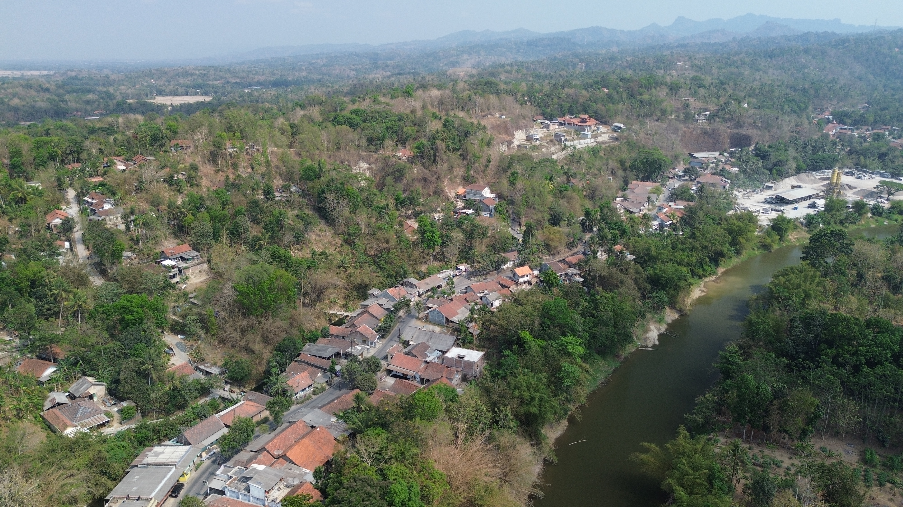

Desa Karangpoh merupakan salah satu satuan wilayah administratif tingkat desa yang secara hirarki berada di bawah naungan Pemerintah Kecamatan Pejagoan, Kabupaten Kebumen, Provinsi Jawa Tengah. Pada halaman ini, Anda dapat menjelajahi peta interaktif yang menampilkan berbagai informasi geografis dan data penting terkait Desa Karangpoh. Temukan lokasi, fasilitas, dan informasi lainnya dengan mudah melalui antarmuka yang ramah pengguna.
